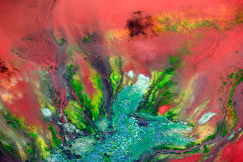

| Home | Introducere | Poluarea aerului | Poluarea apelor | Poluarea solului | Combaterea poluării |
Sunt două categorii de materiale poluante (poluanți).  Poluanții biodegradabili sunt substanțe, cum ar fi apa menajeră, care se descompun rapid în proces natural. Acești poluanți devin o problemă când sunt adunați mai rapid decât pot să se descompună. Poluanții nondegradabili sunt materiale care nu se descompun sau se descompun foarte lent în mediul natural. Odată ce apare contaminarea, este dificil sau chiar imposibil să se îndepărteze acești poluanți din mediu. Compușii nondegradabili cum ar fi Diclor-Difenil-Tricloretan (DDT), dioxine, difenili policrorurati (PCB) și materiale radioactive pot să ajungă la nivele periculoase de acumulare și pot să urce în lanțul trofic prin intermediul animalelor. De exemplu, moleculele compușilor toxici pot să se depună pe suprafața plantelor acvatice fără să distrugă acele plante. Un pește mic care se hrănește cu aceste plante acumulează o cantitate mare din aceste toxine. Un pește mai mare sau alte animale carnivore care se hrănesc cu pești mici pot să acumuleze o cantitate mai mare de toxine. Acest proces se numește bioacumulare. Planeta Albastră URL: http://www.planeta.albastra.go.ro/intro.html |